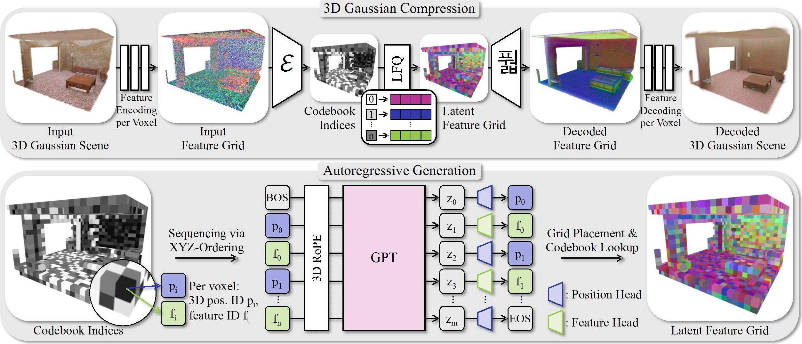

Most recent advances in 3D generative modeling rely on diffusion or flow-matching formulations. We instead explore a fully autoregressive alternative and introduce GaussianGPT, a transformer-based model that directly generates 3D Gaussians via next-token prediction, thus facilitating full 3D scene generation. We first compress Gaussian primitives into a discrete latent grid using a sparse 3D convolutional autoencoder with vector quantization. The resulting tokens are serialized and modeled using a causal transformer with 3D rotary positional embedding, enabling sequential generation of spatial structure and appearance. Unlike diffusion-based methods that refine scenes holistically, our formulation constructs scenes step-by-step, naturally supporting completion, outpainting, controllable sampling via temperature, and flexible generation horizons. This formulation leverages the compositional inductive biases and scalability of autoregressive modeling while operating on explicit representations compatible with modern neural rendering pipelines, positioning autoregressive transformers as a complementary paradigm for controllable and context-aware 3D generation.

3D Gaussian Compression. We first convert a 3D Gaussian scene into a compact discrete representation suitable for token-based modeling. Gaussian primitives are projected onto a sparse 3D voxel grid, then compressed by a sparse 3D convolutional encoder into a low-dimensional latent grid. The latent features are discretized via lookup-free quantization, yielding a grid of codebook indices that faithfully encodes both the geometry and appearance of the scene. A symmetric decoder reconstructs the Gaussian attributes from these indices, trained end-to-end with rendering, occupancy, and codebook entropy losses.
Autoregressive Generation. The quantized latent grid is serialized into a 1D token sequence by traversing voxels in a fixed xyz order, interleaving position tokens and feature tokens for each occupied voxel. A GPT-style causal transformer with 3D rotary positional embeddings is trained to predict this sequence token by token, jointly modeling scene geometry and appearance. At inference time, the model generates scenes unconditionally from scratch, or conditions on a partial scene to perform completion and outpainting, all using the same autoregressive sampling mechanism.
By starting only with a BOS token, GaussianGPT can autoregressively generate 3D Gaussian scenes unconditionally, producing diverse scene chunks.
GaussianGPT naturally supports scene completion by conditioning on a partial scene as a prompt, then autoregressively generating the remaining tokens to complete the scene.
Through repeated outpainting, GaussianGPT can generate large scenes that exceed the model's training horizon while keeping a consistent style and structure.
@misc{vonluetzow2026gaussiangpt,
title={GaussianGPT: Towards Autoregressive 3D Gaussian Scene Generation},
author={von L{\"u}tzow, Nicolas and R{\"o}{\ss}le, Barbara and Schmid, Katharina and Nie{\ss}ner, Matthias},
year={2026},
eprint={2603.26661},
archivePrefix={arXiv},
primaryClass={cs.CV},
url={https://arxiv.org/abs/2603.26661},
}